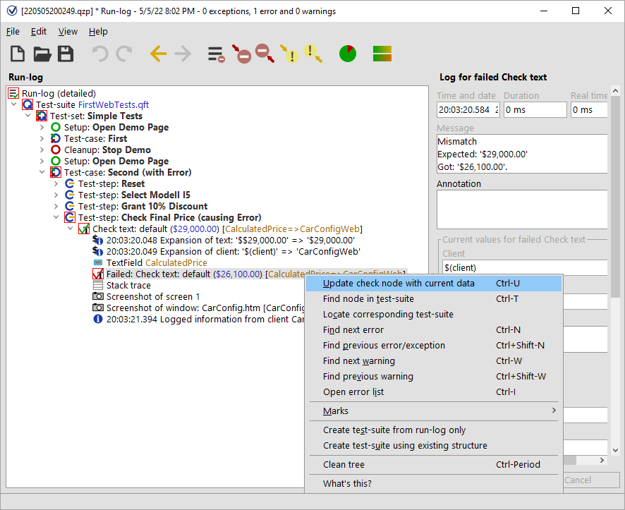
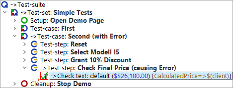

| Version 6.0.3 |
The Jump to run-log button from the dialog in figure 14.12 will not only open the run-log but takes us directly to the node that holds the error details. Apart from the actual error message you will find screenshots and a copy of the variable bindings table (stack trace), which we will introduce later on (The Variable Bindings table).
The error details tell you that the expected value does not match with the one shown in the application. As the one in the application is correct we want to update the expected value with the one from the application. This can easily be achieved as follows:
|
|  | ||
|
| Figure 14.13: Update check node with current data | ||
This locates the corresponding 'Check text' node in the test-suite and updates the expected value of the 'Text' attribute with the value got as indicated by the run-log.
|
|  | ||
|
| Figure 14.14: Corrected check node | ||
The previously faulty node still is highlighted with a red border since we have not run it again.
QF-Test runs the rest of the test-suite, i.e. the 'Check text' and 'Cleanup' nodes, and informs you at the end of the run that there was one error, which you have already fixed.
Since the error has been fixed and we will continue using the test-cases as examples you could rename the second test-case and delete '(with error)' in its name as well as '(causing Error)' in the name of the test-step.
Jump into run-log: You do not have to wait for an error dialog to open the run-log at the current point of execution (or close by). Whenever you are in debugging mode, select the »Debugger«-»Jump to Run-Log« menu option, or use the [Ctrl-J] shortcut. If you just want to open the run-log without jumping to the current point of execution you can use [Ctrl-L]. This will work after the test run finished, too.
| Last update: 9/6/2022 Copyright © 2002-2022 Quality First Software GmbH |